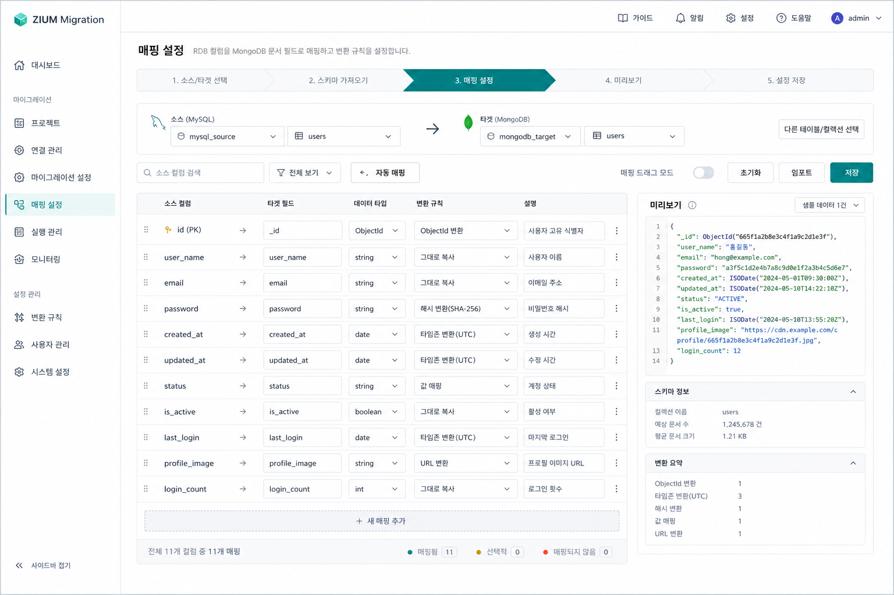

설정정보 모델링
MySQL DDL 기준 정리
이 문서는 설정정보 메타데이터를 MySQL에 저장한다는 전제로 작성한 백엔드 설계 초안입니다. 화면 입력 모델보다 한 단계 아래인 영속 계층 관점에서, 마이그레이션 작업 정의, 소스/타겟 연결, 필드 매핑, 실행 이력을 어떻게 테이블로 나눌지 정리합니다.
정규화
소스, 타겟, 작업, 매핑, 실행 이력을 분리 저장
운영성
상태 조회, 검색, 재실행, 이력 관리가 쉬운 구조
확장성
초기 1차는 MySQL 소스 중심, 이후 타 RDB 확장 가능
15년차 BE 관점 핵심 원칙
설정과 실행 분리
설정 메타데이터와 실행 이력은 같은 테이블에 두지 않습니다. 변경 빈도와 조회 패턴이 다릅니다.
비밀번호 평문 저장 금지
password_secret 또는 별도 시크릿 저장소 키만 DB에 보관합니다.
재실행 가능성 우선
매핑 정의와 실행 결과를 분리 저장해야 동일 작업의 재실행과 비교가 가능합니다.
모델 개요
핵심 엔터티
migration_source: 소스 DB 연결정보migration_target: MongoDB 타겟 연결정보migration_job: 마이그레이션 작업 정의migration_mapping: 컬럼 → 필드 매핑 정의migration_execution: 실행 이력
권장 확장 포인트
- 추후
source_type으로 PostgreSQL, Oracle 확장 - 고급 변환 로직은
transform_rule_json에서 관리 - 대규모 실행 로그는 별도 로그 저장소로 분리 고려
테이블 구조 제안
migration_job
타입
필수
설명
id
bigint
Y
마이그레이션 작업 PK
job_name
varchar(200)
Y
운영자가 식별하는 작업명
source_id
bigint
Y
migration_source FK
target_id
bigint
Y
migration_target FK
sync_mode
varchar(20)
Y
full / incremental
schedule_type
varchar(20)
N
manual / interval / cron
schedule_expr
varchar(120)
N
Cron 또는 간격 표현식
status
varchar(20)
Y
draft / ready / running / failed / archived
migration_source
타입
필수
설명
id
bigint
Y
소스 연결정보 PK
source_type
varchar(30)
Y
mysql, postgres 등
host
varchar(255)
Y
소스 호스트
port
int
Y
소스 포트
database_name
varchar(120)
Y
RDB 데이터베이스명
username
varchar(120)
Y
접속 계정
password_secret
varchar(255)
Y
시크릿 저장소 참조키
jdbc_params_json
json
N
추가 JDBC 옵션
migration_target
타입
필수
설명
id
bigint
Y
타겟 연결정보 PK
target_type
varchar(30)
Y
mongodb 고정
uri
varchar(500)
Y
MongoDB 연결 URI
database_name
varchar(120)
Y
저장 대상 DB명
collection_name
varchar(120)
N
기본 컬렉션명
options_json
json
N
추가 옵션
migration_execution
타입
필수
설명
id
bigint
Y
실행 이력 PK
job_id
bigint
Y
migration_job FK
started_at
datetime
Y
실행 시작 시각
ended_at
datetime
N
실행 종료 시각
result_status
varchar(20)
Y
success / failed / stopped / partial_success
read_count
bigint
N
읽은 레코드 수
written_count
bigint
N
적재 완료 수
error_message
text
N
실패 요약 메시지
매핑 정보 테이블
migration_mapping
타입
필수
설명
id
bigint
Y
매핑 정의 PK
job_id
bigint
Y
migration_job FK
target_collection_name
varchar(120)
Y
이 매핑이 적용되는 MongoDB 컬렉션명
source_table
varchar(120)
Y
RDB 원본 테이블명
source_column
varchar(120)
Y
RDB 원본 컬럼명
target_field
varchar(200)
Y
MongoDB 문서 필드 경로. 예: user.profile.name
target_type
varchar(30)
N
string, int64, date, boolean, objectId 등
is_key_field
tinyint(1)
N
업서트나 식별 기준으로 사용하는 키 필드 여부
is_pk_mapping
tinyint(1)
N
RDB PK 컬럼을 매핑한 항목인지 표시
null_handling_type
varchar(30)
N
keep_null, default_value, skip_field 등 널 처리 정책
default_value
varchar(255)
N
null 처리 시 대체할 기본값
transform_rule_json
json
N
치환, 포맷, 마스킹, 케이스 변환 등 상세 규칙
enabled
tinyint(1)
Y
현재 매핑 활성화 여부
sort_order
int
N
화면 표시 및 적용 순서
MySQL DDL
CREATE TABLE migration_source (
id BIGINT NOT NULL AUTO_INCREMENT COMMENT '소스 연결정보 ID',
source_type VARCHAR(30) NOT NULL COMMENT '소스 유형: mysql, postgres 등',
host VARCHAR(255) NOT NULL COMMENT '소스 DB 호스트',
port INT NOT NULL COMMENT '소스 DB 포트',
database_name VARCHAR(120) NOT NULL COMMENT '소스 데이터베이스명',
username VARCHAR(120) NOT NULL COMMENT '소스 DB 접속 계정',
password_secret VARCHAR(255) NOT NULL COMMENT '비밀번호 시크릿 참조 키',
jdbc_params_json JSON NULL COMMENT '추가 JDBC 연결 옵션',
created_at DATETIME NOT NULL DEFAULT CURRENT_TIMESTAMP COMMENT '생성 시각',
updated_at DATETIME NOT NULL DEFAULT CURRENT_TIMESTAMP ON UPDATE CURRENT_TIMESTAMP COMMENT '수정 시각',
PRIMARY KEY (id)
) COMMENT='RDB 소스 연결정보';
CREATE TABLE migration_target (
id BIGINT NOT NULL AUTO_INCREMENT COMMENT '타겟 연결정보 ID',
target_type VARCHAR(30) NOT NULL COMMENT '타겟 유형: mongodb',
uri VARCHAR(500) NOT NULL COMMENT 'MongoDB 연결 URI',
database_name VARCHAR(120) NOT NULL COMMENT '타겟 데이터베이스명',
collection_name VARCHAR(120) NULL COMMENT '기본 타겟 컬렉션명',
options_json JSON NULL COMMENT '추가 타겟 옵션',
created_at DATETIME NOT NULL DEFAULT CURRENT_TIMESTAMP COMMENT '생성 시각',
updated_at DATETIME NOT NULL DEFAULT CURRENT_TIMESTAMP ON UPDATE CURRENT_TIMESTAMP COMMENT '수정 시각',
PRIMARY KEY (id)
) COMMENT='MongoDB 타겟 연결정보';
CREATE TABLE migration_job (
id BIGINT NOT NULL AUTO_INCREMENT COMMENT '마이그레이션 작업 ID',
job_name VARCHAR(200) NOT NULL COMMENT '마이그레이션 작업명',
source_id BIGINT NOT NULL COMMENT '소스 연결정보 ID',
target_id BIGINT NOT NULL COMMENT '타겟 연결정보 ID',
sync_mode VARCHAR(20) NOT NULL COMMENT '동기화 방식: full, incremental',
schedule_type VARCHAR(20) NULL COMMENT '스케줄 유형: manual, interval, cron',
schedule_expr VARCHAR(120) NULL COMMENT '스케줄 표현식 또는 Cron',
status VARCHAR(20) NOT NULL DEFAULT 'draft' COMMENT '작업 상태: draft, ready, running, failed, archived',
created_at DATETIME NOT NULL DEFAULT CURRENT_TIMESTAMP COMMENT '생성 시각',
updated_at DATETIME NOT NULL DEFAULT CURRENT_TIMESTAMP ON UPDATE CURRENT_TIMESTAMP COMMENT '수정 시각',
PRIMARY KEY (id),
CONSTRAINT fk_migration_job_source
FOREIGN KEY (source_id) REFERENCES migration_source(id),
CONSTRAINT fk_migration_job_target
FOREIGN KEY (target_id) REFERENCES migration_target(id)
) COMMENT='마이그레이션 작업 마스터';
CREATE TABLE migration_mapping (
id BIGINT NOT NULL AUTO_INCREMENT COMMENT '매핑 정의 ID',
job_id BIGINT NOT NULL COMMENT '마이그레이션 작업 ID',
target_collection_name VARCHAR(120) NOT NULL COMMENT '적용 대상 MongoDB 컬렉션명',
source_table VARCHAR(120) NOT NULL COMMENT '원본 RDB 테이블명',
source_column VARCHAR(120) NOT NULL COMMENT '원본 RDB 컬럼명',
target_field VARCHAR(200) NOT NULL COMMENT '타겟 MongoDB 문서 필드 경로',
target_type VARCHAR(30) NULL COMMENT '타겟 필드 타입',
is_key_field TINYINT(1) NULL DEFAULT 0 COMMENT '업서트 식별 키 여부',
is_pk_mapping TINYINT(1) NULL DEFAULT 0 COMMENT '원본 PK 매핑 여부',
null_handling_type VARCHAR(30) NULL COMMENT '널 처리 정책',
default_value VARCHAR(255) NULL COMMENT '널 처리 기본값',
transform_rule_json JSON NULL COMMENT '변환 규칙 JSON',
enabled TINYINT(1) NOT NULL DEFAULT 1 COMMENT '활성화 여부',
sort_order INT NULL COMMENT '정렬 순서',
created_at DATETIME NOT NULL DEFAULT CURRENT_TIMESTAMP COMMENT '생성 시각',
updated_at DATETIME NOT NULL DEFAULT CURRENT_TIMESTAMP ON UPDATE CURRENT_TIMESTAMP COMMENT '수정 시각',
PRIMARY KEY (id),
CONSTRAINT fk_migration_mapping_job
FOREIGN KEY (job_id) REFERENCES migration_job(id)
) COMMENT='컬럼-필드 매핑 정의';
CREATE TABLE migration_execution (
id BIGINT NOT NULL AUTO_INCREMENT COMMENT '실행 이력 ID',
job_id BIGINT NOT NULL COMMENT '마이그레이션 작업 ID',
started_at DATETIME NOT NULL COMMENT '실행 시작 시각',
ended_at DATETIME NULL COMMENT '실행 종료 시각',
result_status VARCHAR(20) NOT NULL COMMENT '실행 결과 상태',
read_count BIGINT NULL COMMENT '읽은 건수',
written_count BIGINT NULL COMMENT '적재 완료 건수',
error_message TEXT NULL COMMENT '오류 요약 메시지',
created_at DATETIME NOT NULL DEFAULT CURRENT_TIMESTAMP COMMENT '이력 생성 시각',
PRIMARY KEY (id),
CONSTRAINT fk_migration_execution_job
FOREIGN KEY (job_id) REFERENCES migration_job(id)
) COMMENT='마이그레이션 실행 이력';
CREATE INDEX idx_migration_job_status
ON migration_job(status);
CREATE INDEX idx_migration_mapping_job_sort
ON migration_mapping(job_id, sort_order);
CREATE INDEX idx_migration_execution_job_started
ON migration_execution(job_id, started_at DESC);입력 필드와 MySQL 컬럼 매핑
화면 입력값
Connection Name Host Port Database Username Password Mongo URI Collection
Connection Name Host Port Database Username Password Mongo URI Collection
저장 위치
migration_job.job_namemigration_source.host,port,database_name,usernamemigration_source.password_secretmigration_target.uri,collection_name
매핑 화면 목업
RDB 컬럼 → MongoDB 필드 매핑 예시
